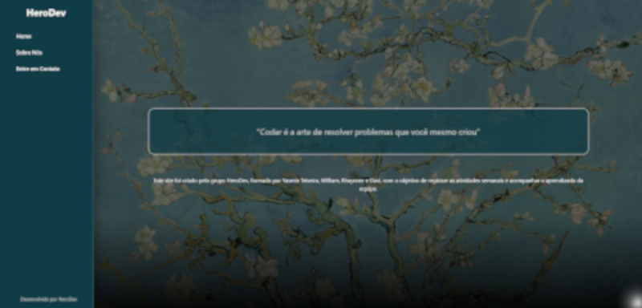
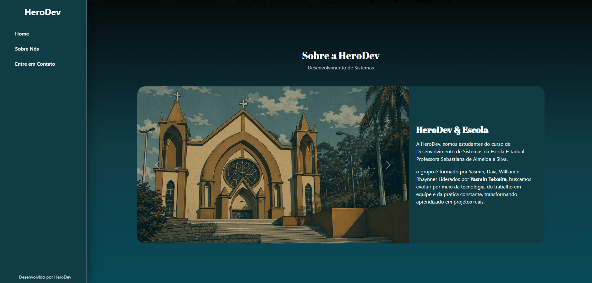
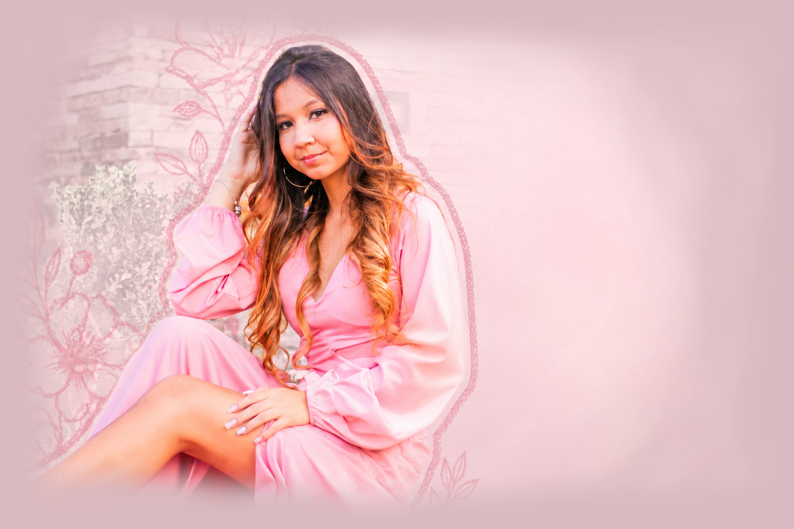
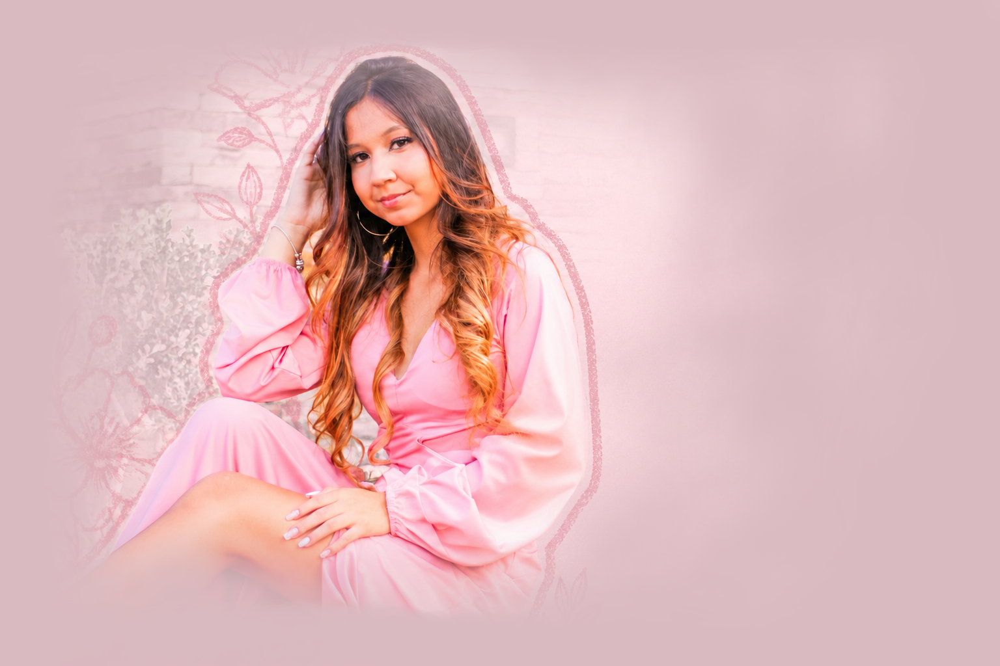
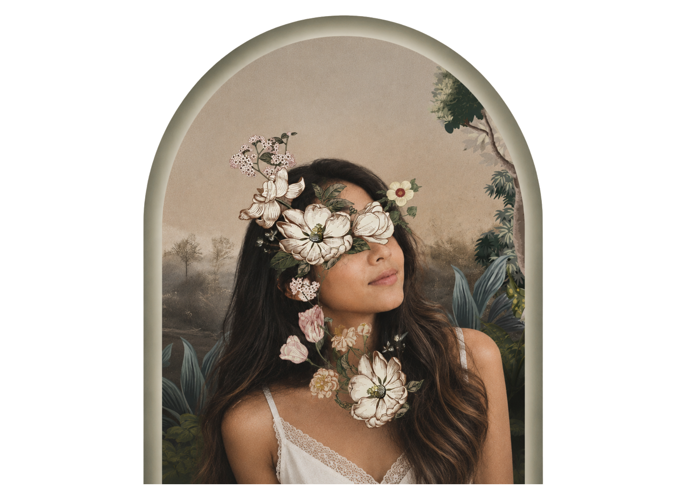

Yasmin Teixeira
Sábio é aquele que conhece os limites da própria ignorância.
Olá, eu sou
Sou Yasmin, profissional de marketing digital apaixonada por transformar ideias em resultados.
Ajudo profissionais e empresas a fortalecerem sua presença online por meio da criação de portfólios em sites e PDF, gestão de redes sociais, secretaria virtual e produção de conteúdo.
Cada projeto é desenvolvido com criatividade, estratégia e atenção aos detalhes, sempre buscando transmitir credibilidade, destacar a identidade da marca e criar uma comunicação que conecte o cliente ao seu público de forma profissional e eficiente.
Como posso te ajudar?
Criação de Portfólios
Sites e PDF
Um portfólio é a melhor forma de apresentar seu trabalho com organização, credibilidade e profissionalismo. Desenvolvo portfólios personalizados em site ou PDF, com design moderno, navegação intuitiva e identidade visual alinhada à sua marca, ajudando você a destacar seus projetos e conquistar novas oportunidades.
Social Media
Gestão de Redes Sociais
Ter uma presença ativa nas redes sociais é essencial para fortalecer sua marca e conquistar novos clientes. O serviço de Social Media inclui planejamento de conteúdo, organização do perfil, criação de estratégias e gestão das publicações, garantindo uma comunicação profissional, consistente e alinhada aos objetivos do seu negócio.
Secretária Virtual
Sistema para uma empresa de carros
A Secretaria Virtual oferece suporte administrativo remoto para otimizar a rotina do seu negócio. O serviço inclui organização de agendas, atendimento ao cliente, gerenciamento de documentos, controle de tarefas e apoio em processos administrativos, permitindo que você tenha mais tempo para focar no crescimento da sua empresa com praticidade e eficiência.
Fotografia e Edição de Vídeos
Site escola
A fotografia e a criação de vídeos são essenciais para destacar sua marca e transmitir profissionalismo. Produzo conteúdos visuais de qualidade para redes sociais, portfólios e divulgação, valorizando sua identidade e tornando sua comunicação mais atrativa, autêntica e conectada com o seu público.
Galeria de Fotos






